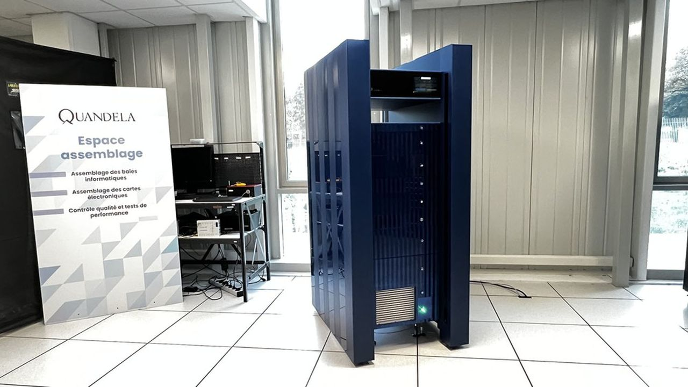

Quandela dévoile une feuille de route 2024-2030 ambitieuse
Date de publication : 23 octobre 2024
Auteur : Pascal Coutance
Quandela, une start-up française spécialisée dans l'informatique quantique photonique, a révélé en octobre 2024 une feuille de route détaillant ses objectifs pour la période 2024-2030. Parmi ces objectifs figure le développement de processeurs quantiques capables d'effectuer des calculs complexes avec une précision accrue grâce à des technologies de correction d'erreurs.
L'un des points forts de cette feuille de route est l'ambition de rendre la technologie quantique accessible à un public plus large, notamment via des plateformes en cloud permettant aux entreprises et aux chercheurs de tester des algorithmes quantiques.
Quandela met également l'accent sur le partenariat avec des institutions académiques et industrielles pour accélérer la recherche et le développement. Cette initiative renforce la position de la France comme acteur clé dans l'écosystème quantique mondial.